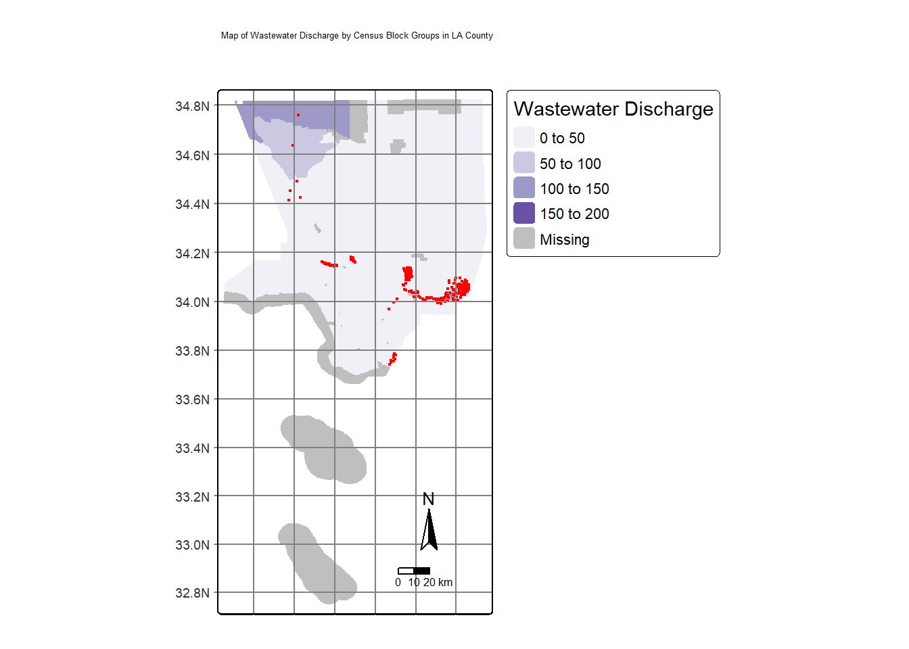

Code
library(tmap)
library(tidyverse)
library(sf)
library(spData)
library(here)
library(dplyr)
library(sp)
library(gt)December 12, 2023
This blog post aims to highlight the lasting effects of zoning, particularly in Los Angeles. The incorporation of HOLC (Homeowners Loan Corporation Act) has led to long lasting and detrimental effects in which economic security of minority communities was no longer deemed a possibility. The Federal Home Loan Bank Board (FHLBB) set standards in place to which neighborhood demographics (i.e percent of minority population) was deemed a factor in loan eligibility. Following the stock market crash and Great Depression, countless banks across the country began to close. According to the Urban History Association, “as banks failed by the thousands, freezing credit markets and increasing unemployment, foreclosures skyrocketed and threatened to destroy the national housing industry” (Woods 2012). In order to remediate mass daily foreclosures, Congress then put in place the Home Owners’ Loan Corporation (HOLC) in order to help desperate homeowners. However, HOLC associated unsuitable candidates for a loan with their ethnic backgrounds, leaving many minority communities behind in moving forward from economic despair.
Current ongoing cases of environmental injustices/racism are arguably consequences of prejudiced enforcement of the past. America’s long history of racial segregation still has left its mark in Los Angeles. HOLC and their ranking systems were used to determine whether a certain neighborhood or region is suitable for a loan. Their ranking system, (A (green), B (blue), C (yellow), D (red)) was then used to block access to loans for home ownership, which is currently known as ‘redlining’. However, redlined communities tend to have less greenery and are typically hotter than other neighborhoods/communities.
In this project, I aim to investigate whether or not redlined communities in Los Angeles have higher rates of pollution burden, have less reports of bird sightings as an indication of biodiversity.
To obtain demographic and environmental data by census tract in Los Angeles, we will be using tdata from the EPA’s Environmental Justice Screening and Mapping Tool.
For HOLC grade designations in Los Angeles, we will be using a GeoJSON file from the Digital Scholars Lab containing redlining information.
Lastly ,for biodiversity data represented by bird sightings, we will use data from the Global Biodiversity Information Facility.
Since the data was too big to upload, I uploaded them into a zip folder which can be accessed here.
Loading necessary packages and data
Reading in EJScreen data and filter to Los Angeles County
Reading layer `EJSCREEN_StatePctiles_with_AS_CNMI_GU_VI' from data source
`C:\Users\maria\Documents\git\mariamkg00.github.io\blog\geospatial-analysis-of-HOLC-in-LA\data\EJSCREEN_2023_BG_StatePct_with_AS_CNMI_GU_VI.gdb'
using driver `OpenFileGDB'
Simple feature collection with 243021 features and 223 fields
Geometry type: MULTIPOLYGON
Dimension: XY
Bounding box: xmin: -19951910 ymin: -1617130 xmax: 16259830 ymax: 11554350
Projected CRS: WGS 84 / Pseudo-MercatorIn order to visualize waste water discharge by census block groups, I will use tmap() in order to help identify which census block groups are above the 95th percentile of waste water discharge while adding a centroid using st_centroid()
# making centroids using st_centroid()
la_ejscreen_centroids <- st_centroid(la_county) %>%
filter(P_PWDIS > 95)
#using tmap to plot
tm_shape(la_county)+
tm_fill(fill = 'PWDIS', palette = 'BuGn',
title = 'Wastewater Discharge')+
tm_shape(la_ejscreen_centroids)+
tm_dots(fill = 'red')+
tm_graticules()+
tm_compass()+
tm_layout(main.title = 'Map of Wastewater Discharge by Census Block Groups in LA County') +
tm_scale_bar(position = c("LEFT","BOTTOM"))Deprecated tmap v3 code detected. Code translated to v4
@online{garcia2023,
author = {Garcia, Mariam},
title = {Historical {Redlining} and Its {Impact} on {Commmunities} in
{LA}},
date = {2023-12-12},
url = {https://mariamkg00.github.io/blog/geospatial-analysis-of-HOLC-in-LA/},
langid = {en}
}